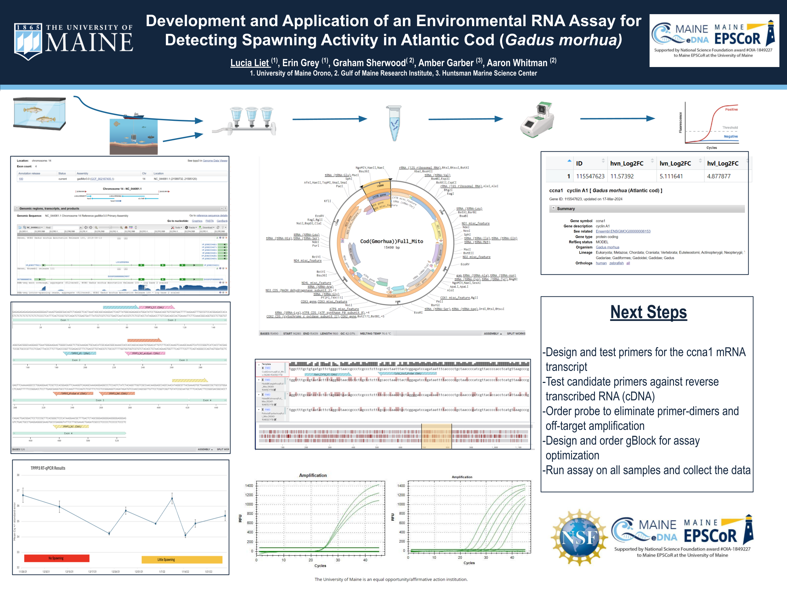

Lucia Cali B.S.
Biology · Biotechnology · Scientific Writing
Home
About
Research
Blog
CV
Molecular characterization of spawning-associated RNA expression in Atlantic cod (Gadus morhua) using RT-qPCR

Research poster presented at the University of Maine Annual Student Symposium, Orono, ME, 2024.